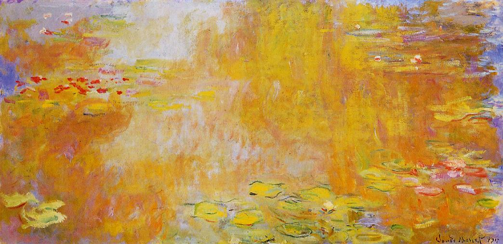
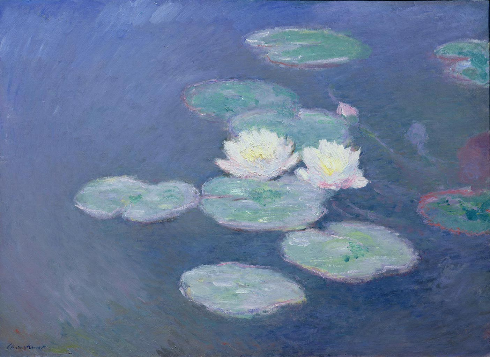

Water Lilies is a series of approximately 250 oil paintings by French Impressionist Claude Monet. The paintings depict his flower garden at his home in Giverny, and were the main focus of his artistic production during the last thirty years of his life. Many of the works were painted while Monet suffered from cataracts.
Below are some selected paintings of this series.
Impression, Sunrise
Rouen Cathedral series
Houses of Parliament series
Haystacks series